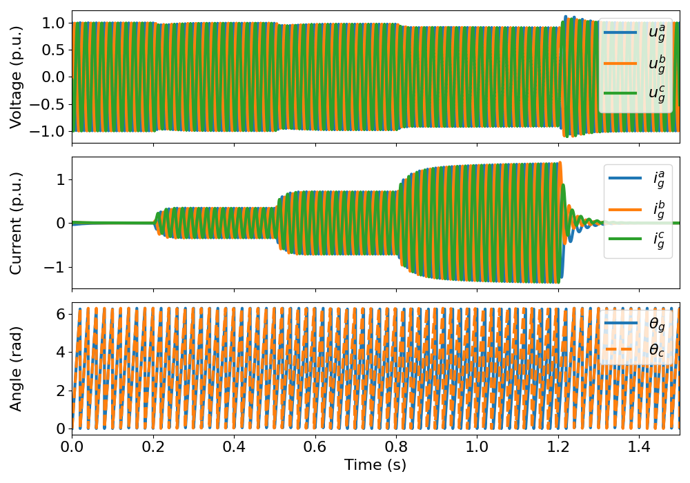
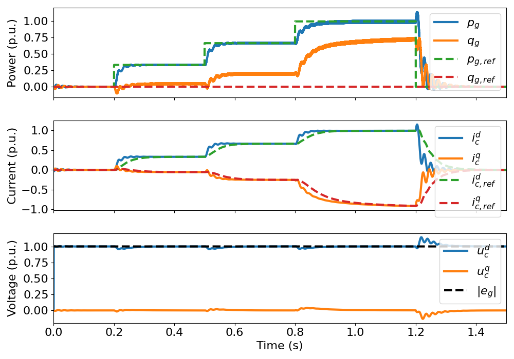

Note
Go to the end to download the full example code
6.9-kVA grid forming converter, power synchronization control (PSC)#
This example simulates a grid forming controlled converter connected to a weak grid. The control system includes a power synchronization loop (PSL) to synchronize with the grid, an inner P_type current controller used to damp the current oscillations and an optional DC-bus voltage controller.
Imports.
import numpy as np
from gritulator import model, control
from gritulator import BaseValuesElectrical, plot_grid
# To check the computation time of the program
import time
start_time = time.time()
Compute base values based on the nominal values (just for figures).
base_values = BaseValuesElectrical(
U_nom=400, I_nom=10, f_nom=50.0, P_nom=6.9e3)
Create the system model.
grid_filter = model.LFilter(L_f = 8e-3, L_g=65.8e-3, R_g=0)
grid_model = model.StiffSource(w_N=2*np.pi*50)
conv = model.Inverter(u_dc=650)
mdl = model.ac_grid.StiffSourceAndLFilterModel(grid_filter, grid_model, conv)
Configure the control system.
# Control parameters
pars = control.grid_forming.PSCCtrlPars(
L_f=8e-3,
f_sw = 4e3,
T_s = 1/(8e3),
on_rf=False,
on_v_dc=False,
i_max = 1.5*base_values.i,
w_0_cc = 2*np.pi*5,
R_a = .2*base_values.Z)
ctrl = control.grid_forming.PSCCtrl(pars)
Set the time-dependent reference and disturbance signals.
# Set the active power reference
ctrl.p_g_ref = lambda t: ((t > .2)*(2.3e3) + (t > .5)*(2.3e3) +
(t > .8)*(2.3e3) - (t > 1.2)*(6.9e3))
# AC-voltage magnitude (to simulate voltage dips or short-circuits)
e_g_abs_var = lambda t: np.sqrt(2/3)*400
mdl.grid_model.e_g_abs = e_g_abs_var # grid voltage magnitude
# Create the simulation object and simulate it
sim = model.Simulation(mdl, ctrl, pwm=False)
sim.simulate(t_stop = 1.5)
# Print the execution time
print('\nExecution time: {:.2f} s'.format((time.time() - start_time)))
Execution time: 5.50 s
Plot results in SI or per unit values.
plot_grid(sim, base=base_values, plot_pcc_voltage=True)
- 
- 
Total running time of the script: (0 minutes 6.370 seconds)